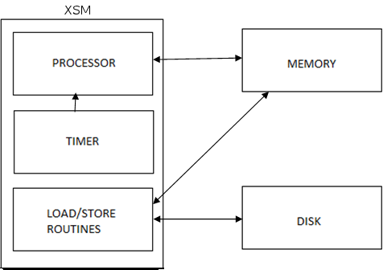
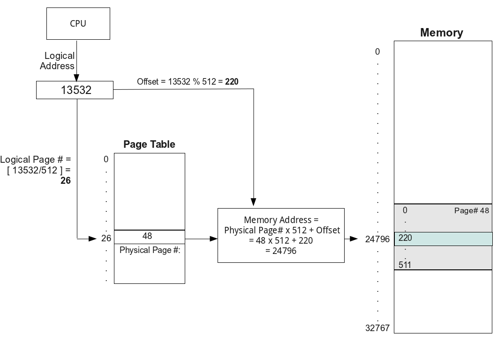
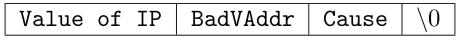

Introduction
Brief Machine Description
The machine simulator is known as eXperimental String Machine (XSM).
It is an interrupt driven uniprocessor machine. The machine handles data as strings.
A string is a sequence of characters terminated by ’\0’.
The length of a string is at most 16 characters including ’\0’.
Each of these strings is stored in a word. (Refer Section: Memory)
The machine interprets a single character also as a string.
Components of the Machine
Disk: It is a non-volatile storage that stores user programs (executables) and data files.
The Operating System code is also stored in the disk.
Memory: It is a volatile storage that stores the programs to be run on the machine as well as the operating system that manages the various programs.
Processor: It is the main computational unit that is used to execute the instructions.
Timer: It is a device that interrupts the processor after a pre-defined specific time interval.
Load/Store: It is a macro that performs the functionalities of DMA (Direct Memory Access) controller. (Refer Section: Instructions)

Supported Datatypes
XSM supports 2 different datatypes and their operations, namely Strings and Integers.
However in the lowest level both integers and strings are internally stored as strings.
Strings:
Strings are sequence of characters which may include alphabets, numerals and special characters.
Every string is terminated with a null character (’\0’).
Operations that can be performed on strings include lexicographic comparisons.
Integers:
Apart from strings, XSM supports integers and its operations.
The operations that can be performed on integers include arithmetic operations and comparison operations.
A jump can also be performed by checking if a register has 0 in it.
Registers
Introduction
The XSM architecture maintains 34 registers (each one word).
Register Set
There are 28 General Purpose Registers (GPR), of which R0 - R7 are Program Registers and S0 - S15 are Kernel Registers. There are 4 temporary registers T0 - T3 which are reserved for code translation. The registers T0 - T3 are not intended to be used by the system programmer.
In addition to these 28 registers there are 6 Special Purpose Registers (SPR) namely BP (Base Pointer), SP (Stack Pointer), IP (Instruction Pointer), PTBR (Page Table Base Register) and PTLR (Page Table Length Register) and the EFR (Exception Flag Register).
| Name | Register |
| Program Registers | R0 - R7 |
| Kernel Registers | S0 - S15 |
| Temporary Registers | T0 - T3 |
| Base Pointer | BP |
| Stack Pointer | SP |
| Instruction Pointer | IP |
| Page Table Base Register | PTBR |
| Page Table Length Register | PTLR |
| Exception Flag Register | EFR |
Memory
Introduction
-
The basic unit of memory in XSM is a word (length = 16 bytes).
-
The machine memory can be thought of as a linear sequence of words.
-
A collection of 512 contiguous words is known as a page.
-
The total size of the memory is 64 pages or 32768 (512 × 64) words.
-
Each word in the memory is identified by the word address in the range 0 to 32767.
Similarly, each page in the memory is identified by the page number in the range 0 to 63.
-
The page number corresponding to a word is obtained by the formula, page number = floor(word address/512)
Address Translation
There are two kinds of memory addresses,
Logical address: When a process runs in user mode, CPU generates address for the data accessed by this process.
This address is called the Logical address.
Physical address: It is the actual location of the data in the main memory.
Address translation is the process of obtaining the physical address from the logical address.
It is done by the machine in the following way.
The logical address generated by the CPU is divided by the page size (512) to get the logical page number.
The remainder is the offset of the data within that page.
A page table is used for address translation.
It resides in the memory, the location of which is pointed to by PTBR (Page Table Base Register).
The number of entries in the page table is stored in PTLR (Page Table Length Register).
Each entry of the page table is two words long.
First word of a valid page table entry contains a physical page number corresponding to a logical page number.
The second word contains auxiliary information. The first bit in this word is used as reference bit. This bit is set to 0 initially. When a particular page is accessed, the machine sets the reference bit of the corresponding page table entry to 1 (indicating referenced). The second bit of the auxiliary information is used as a Valid/Invalid bit. It is set to 1 if the entry is a valid physical memory page or set to 0 otherwise. When an access to a page table entry with 0 as the Valid bit is made, machine sets the EFR (Exception Flag Register) with the IP of the instruction which caused the exception, logical page number of the memory location that caused the exception, and cause of the exception (page fault). The privilege mode is changed from user to kernel mode. The value of IP is set to page 7 or word address 3584 in the memory. If an access to a page whose page table entry has Valid/Invalid bit set to 1 is made, the physical address corresponding to the logical address is calculated using the method described here.
The logical page number is used to index the page table to get the corresponding physical page number.
The offset is then used to refer to the word in the physical page containing the data.
The example below shows the address translation corresponding to the logical address 13532.

ROM Code
It is a hard coded assembly level code present in page 0 of the memory.
It is known as the ROM (Read Only Memory) code because in an actual machine it is burnt in the hardware.
When the machine boots up, this code is executed.
This code has the basic functionality of loading block 0 of the disk (which generally contains the OS startup code)
into page 1 of the memory and to set the IP register value to 512.
Disk Structure
Block: It is the basic unit of storage in the disk.
The disk can be thought of as consisting of a linear sequence of 512 blocks.
The size of each block is equal to that of a page in the memory (512 words).
The total disk capacity is 512 × 512 = 262144 words.
Any particular block in the disk is addressed by the corresponding number in the sequence 0 to 511 known as the block number.
| 0 - 511 | 512 - 1023 | ... | 261632 - 262143 |
| Block 0 | Block 1 | ... | Block 511 |
Instructions
Introduction
Every instruction in XSM is 2 words long. The instructions provided by the XSM architecture can be classified into privileged and unprivileged instructions.
Classification
Unprivileged Instructions
-
MOV
-
Register Addressing:
Syntax: MOV Ri, Rj
Copies the contents of the register Rj to Ri.
-
Immediate Addressing:
Syntax: MOV Ri, INTEGER/STRING
Copies the INTEGER/STRING to the register Ri.
-
Register Indirect Addressing:
Syntax: MOV Ri, [Rj]
Copy contents of memory location pointed by Rj to register Ri.
Syntax: MOV [Ri], Rj
Copy contents of Rj to the location whose address is in Ri.
-
Direct Addressing:
Syntax: MOV [LOC], Rj
Copy contents of Rj to the memory address LOC.
Syntax: MOV Rj, [LOC]
Copy contents of the memory location LOC to the register Rj.
-
Direct Indexed Addressing:
Syntax: MOV [LOC] Rj, Ri
Copy contents of Ri to the memory address LOC + (value in Rj)
Syntax: MOV [LOC] Index, Rj
Copy contents of Ri to the memory address LOC + Index. Index must be an integer value.
Syntax: MOV Ri, [LOC] Rj
Copy contents in the memory address LOC + (value in Rj) to the register Ri
Syntax: MOV Ri, [LOC] Index
Copy contents of the memory address LOC + Index to the register Ri. Index must be an integer value.
-
Arithmetic Instructions
Arithmetic Instructions perform arithmetic operations on registers containing integers.
If the register contains a non-integer value, an exception is raised. (Refer Section: Exceptions)
-
ADD, SUB, MUL, DIV and MOD.
Syntax: OP Ri, Rj
The result of Ri op Rj is stored in Ri.
Syntax: OP Ri, INTEGER
The result of Ri op INTEGER is stored in Ri.
-
INR
Syntax: INR Ri
Increments the value of register Ri by 1.
-
DCR
Syntax: DCR Ri
Decrements the value of register Ri by 1.
-
Logical Instructions
Logical instructions are used for comparing values in registers.
Strings can also be compared according to the lexicographic ordering of ASCII.
-
LT
Syntax: LT Ri, Rj
Stores 1 in Ri if the value stored in Ri is less than that in Rj. Ri is set to 0 otherwise.
-
GT
Syntax: GT Ri, Rj
Stores 1 in Ri if the value stored in Ri is greater than that in Rj. Ri set to 0 otherwise.
-
EQ
Syntax: EQ Ri, Rj
Stores 1 in Ri if the value stored in Ri is equal to that in Rj. Set to 0 otherwise.
-
NE
Syntax: NE Ri, Rj
Stores 1 in Ri if the value stored in Ri is not equal to that in Rj. Set to 0 otherwise.
-
GE
Syntax: GE Ri, Rj
Stores 1 in Ri if the value stored in Ri is greater than or equal to that in Rj. Set to 0 otherwise.
-
LE
Syntax: LE Ri, Rj
Stores 1 in Ri if the value stored in Ri is less than or equal to that in Rj. Set to 0 otherwise.
-
Branching Instructions
Branching is achieved by changing the value of the IP to the word address of the target instruction specified by <target_address> .
-
JZ
Syntax: JZ Ri, <target_address>
Jumps to <target_address> if the contents of Ri is zero.
-
JNZ
Syntax: JNZ Ri, <target_address>
Jumps to <target_address> if the contents of Ri is not zero.
-
JMP
Syntax: JMP <target_address>
Unconditional jump to <target_address>
-
Stack Instructions
-
PUSH
Syntax: PUSH Ri
Increment SP by 1 and copy contents of Ri to the location pointed to by SP.
-
POP
Syntax: POP Ri
Copy contents of the location pointed to by SP into Ri and decrement SP by 1.
For both these instructions Ri may be any register except IP.
-
Subroutine Instructions
The CALL instruction copies the address of the next instruction to be fetched on to location SP + 1.
It also increments SP by one and transfers control to the instruction specified by the <target_address>.
The address of the instruction to be fetched is in IP + 2 (each instruction is 2 memory words).
The RET instruction restores the IP value stored at location pointed by SP,
decrements SP by one and continues execution fetching the next instruction pointed to by IP.
The subroutine instructions provide a neat mechanism for procedure invocations.
-
CALL
Syntax: CALL <target_address>
Increments SP by 1, transfers IP + 2 to location pointed to by SP and jumps to instruction specified by <target_address>
-
RET
Syntax: RET
Sets IP to the value pointed to by SP and decrements SP.
-
Input/Output Instructions
-
Debug Instruction
Syntax: BRKP
The machine when run in debug mode invokes the debugger when this intruction is executed. This instruction can be used for debugging system code.
-
END
Syntax: END
This instruction is marks the end of a program.
-
INT
Syntax: INT n
Generates an interrupt to the kernel with n (1 to 7) as a parameter.
It also disables the interrupts. (Refer Section: Interrupts)
Privileged Instructions
There are four privileged instructions. They can only be executed in kernel mode (Refer Section:Privilege Modes) These instructions are:
-
IRET
Syntax: IRET
IRET switches the mode from kernel to user mode. It then sets IP to the value pointed by SP and decrements SP by one.
With the execution of the IRET instruction, interrupts are enabled. (Refer Section: Interrupts)
-
LOAD
Syntax: LOAD pagenum blocknum
This instruction loads the block specified by the blocknum , from the disk, to the page specified by the pagenum in the memory.
blocknum and pagenum should be numbers or registers containing numbers.
An exception is raised (Refer Section: Exceptions) for invalid arguments or illegal memory access.
-
STORE
Syntax: STORE blocknum pagenum
This instruction stores the page specified by the pagenum , from the memory, to the block specified by the blocknum in the disk.
blocknum and pagenum should be numbers or registers containing numbers.
An exception is raised (Refer Section: Exceptions) for invalid arguments or illegal memory access.
The below example will store the 31st page in memory to the 64th block in the disk.
It will then load it to the 15th page in memory.
MOV R1, 64
STORE R1, 31
LOAD 15, R1
-
HALT
Syntax: HALT
This instruction causes the machine to halt immediately.
Privilege Modes
The XSM architecture is interrupt driven and uses a single processor.
There are two privilege modes of execution, the user mode and the kernel mode.
The machine is initially in kernel mode. It switches to user mode when it encounters an IRET instruction. It switches back to kernel mode after an interrupt or an exception occurs.
-
User mode: Only unprivileged instructions can be executed in this mode.
Only registers R0 to R7, SP and BP are allowed to be used in any instruction in this mode. Address translation occurs for all addresses in user mode.
-
Kernel mode: Both privileged and unprivileged instructions can be executed in this mode.
The value of IP and EFR cannot be explicitly changed by any instruction.
Also these registers cannot be used in addressing memory locations. All other registers can be used in Kernel Mode. Address translation does not occur in kernel mode, as all addresses are physical addresses. In kernel mode interrupts are disabled. See Interrupts below.
Interrupts
Interrupts are a mechanism by which the machine interrupts the execution of the processor and
passes control to the kernel to execute interrupt (or exception) handler code.
Interrupts might indicate errors, such as a memory access violation (page fault), a timer interrupt or
a software interrupt invocation from a running program.
The process saves its current state before starting execution of the handler, and then resumes the state once the handler finishes its execution.
Interrupts are disabled when the interrupt handler code is executing.
Exceptions
Exceptions are anomalous situations which changes the normal flow of execution.
There is a flag associated with each exception and the details corresponding to the exception that occured is stored in EFR (Exception Flag Register).
If an exception occurs in User Mode, the machine transfers control of execution, i.e.
changes the value of IP to page number 7 (address = 3584) where the Exception Handler Routine resides.
However in Kernel Mode, the machine halts when it encounters an exception.
The structure of EFR is given below

Value of IP: Stores the value of IP at the point where the exception occured.
The maximum length of IP is 5 digits.
BadVAddr (Bad Virtual Address). This field is relevant when a Page Fault Exception occurs.
The logical page number which caused a page fault exception is stored here. The length of this field is 2 digits.
Cause: This field indicates a number which corresponds to the cause of the exception. E.g. a page fault exception has value 0 stored in Cause field. The length of this field is 1 digit.
Exceptions can be caused when the following events occur.
Page Fault: occurs when the page table entry corresponding to the logical address is invalid.
The value stored in cause field of EFR for this exception is 0.
Illegal instruction: occurs when an attempt is made to execute an instruction not belonging to the instruction set
and also when the operands to the instruction is not legal.
E.g. MOV 4 R0, MOV IP 4 when executed in user mode. These instructions are considered illegal.
The value stored in the cause field of EFR for this exception is 1.
Illegal memory access: occurs when any address generated by the process lies outside its logical address space.
The logical page number generated should be between 0 and the value of PTLR.
The value stored in the cause field of EFR for this exception is 2.
Arithmetic exception: occurs when divisor is 0.
The value stored in the cause field of EFR for this exception is 3.
Illegal operands: occurs when operands contain invalid data corresponding to the instruction.
The value stored in the cause field of EFR for this exception is 4.
Timer Interrupt
Timer Interrupt is automatically triggered by the machine, at set intervals of instructions.
This interrupt cannot be invoked using an INT instruction.
It transfers control of execution, i.e. changes the value of IP to page number 9 (address = 4608).
This is the timer interrupt which interrupts the processor.
Generally it is supposed to contain the code for the scheduler of the operating system,
which schedules the CPU time among the various active processes.
Software Interrupts
Software interrupts are unprivileged and can be called from user mode.
7 interrupt instructions are provided by the machine which transfers control to specific locations in memory, where the interrupt service routines (ISR) of the operating system is expected to be present.
The INT instruction
The instruction used to generate a software interrupt is INT.
Syntax: INT n
The INT instruction passes control to the Interrupt Service Routine (ISR) for this interrupt located at the
physical address computed using the value n.
The physical address of the ISR corresponding to interrupt number n is given by:
Physical Address = (9 + 2n) x Page Size
Note that the interrupts are disabled once this instruction is executed as interrupts cannot be executed in kernel mode.
The 7 INT instructions are:
INT 1
It transfers control of execution to page number 11 (address = 5632)
INT 2
It transfers control of execution to page number 13 (address = 6656)
INT 3
It transfers control of execution to page number 15 (address = 7680)
INT 4
It transfers control of execution to page number 17 (address = 8704)
INT 5
It transfers control of execution to page number 19 (address = 9728)
INT 6
It transfers control of execution to page number 21 (address = 10752)
INT 7
It transfers control of execution to page number 23 (address = 11776).
Brief memory outline for XSM is given below.
| Page No | Contents | Word Address | # of Words |
| 0 | ROM Code | 0 - 511 | 512 |
| 1 | OS Startup Code | 512 - 1023 | 512 |
| 2 - 6 | OS Structures | 1024 - 3583 | 2560 |
| 7 - 8 | Exception Handler | 3584 - 4607 | 1024 |
| 9 - 10 | Timer Interrupt Routine | 4608 - 5631 | 1024 |
| 11 - 12 | Interrupt 1 Routine | 5632 - 6655 | 1024 |
| 13 - 14 | Interrupt 2 Routine | 6656 - 7679 | 1024 |
| 15 - 16 | Interrupt 3 Routine | 7680 - 8703 | 1024 |
| 17 - 18 | Interrupt 4 Routine | 8704 - 9727 | 1024 |
| 19 - 20 | Interrupt 5 Routine | 9728 - 10751 | 1024 |
| 21 - 22 | Interrupt 6 Routine | 10752 - 11775 | 1024 |
| 23 - 24 | Interrupt 7 Routine | 11776 - 12799 | 1024 |
| 25 - 63 | INIT and User Programs | 12800 - 32767 | 19968 |